A homography maps p′ = Hp, with H = [[h1, h2, h3], [h4, h5, h6], [h7, h8, 1]]. Each correspondence (x, y) → (x′, y′) gives two linear equations after clearing the denominator:
With n correspondences, stacking these gives a 2n×8 system Ah = b (24×8 for the first and third pairs with 12 points, 28×8 for gianni with 14), which I solved with least squares. The points below are the ones I clicked.
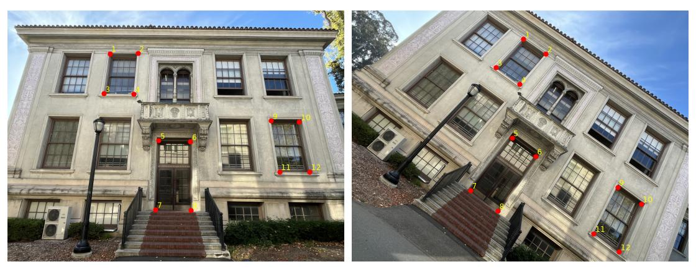
[[ 0.73818 -0.53699 1383.69038] [ 0.52299 0.81146 -728.89169] [-0.00002 0.00001 1.0 ]] mean error 8.10 px
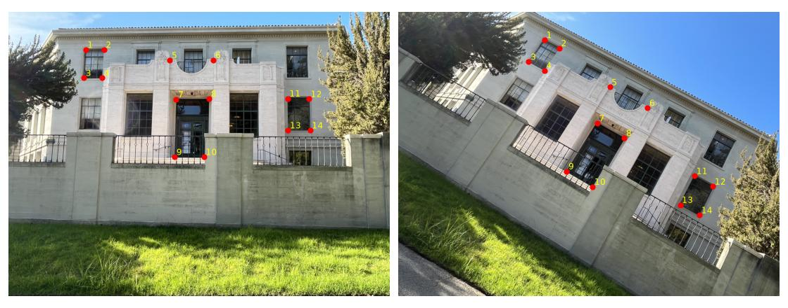
[[ 0.79576 -0.52442 1073.07064] [ 0.44394 0.76706 -378.07159] [-0.00001 -0.00003 1.0 ]] mean error 4.51 px
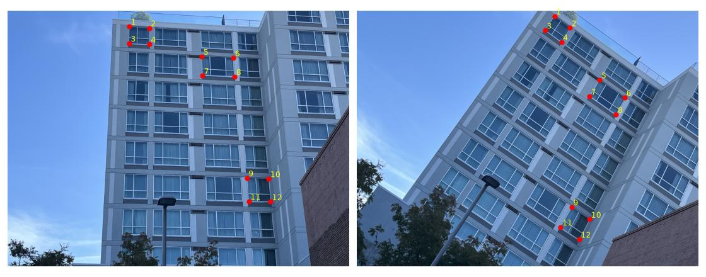
[[ 0.81266 -0.5138 1238.65463] [ 0.51602 0.84794 -834.3558 ] [-0.00001 0.00001 1.0 ]] mean error 3.16 px
Both warps use inverse warping. For each output pixel I apply H−1 to find where it samples the source. Nearest neighbor rounds to the closest pixel, and bilinear takes a weighted average of the four surrounding pixels. To rectify, I clicked the four corners of a window or a row of windows and mapped them to a rectangle.
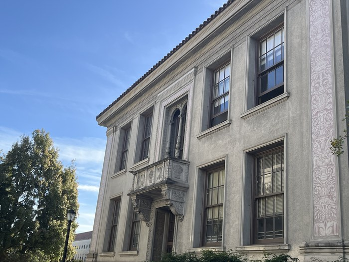
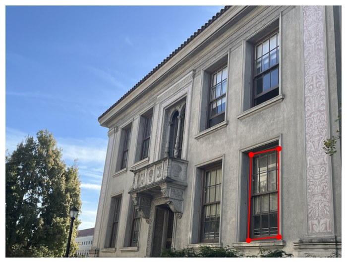
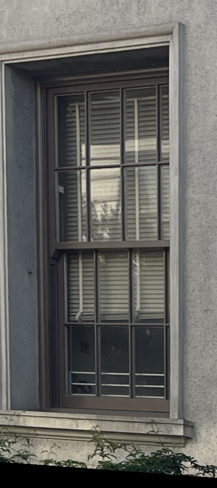
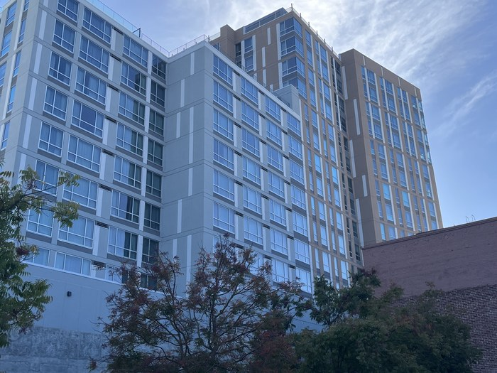
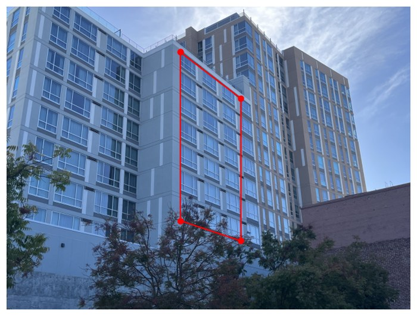
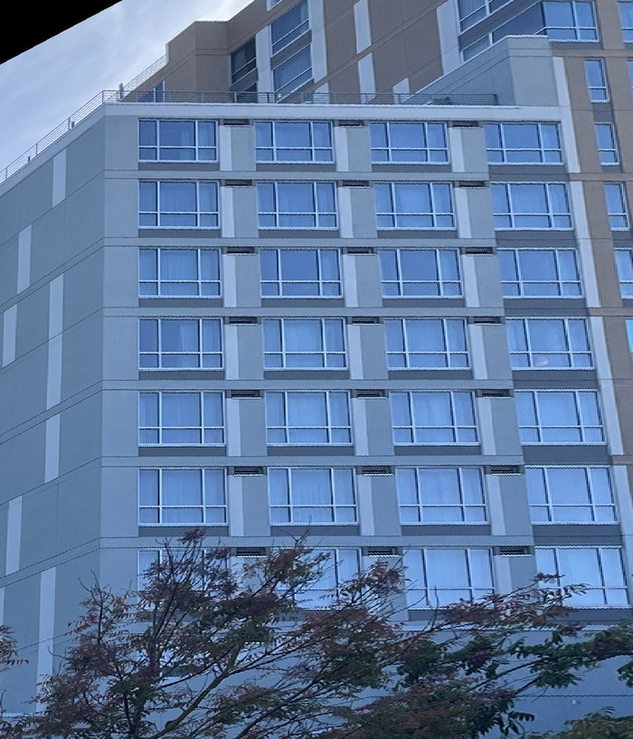
The two look pretty similar at this size. Nearest neighbor is faster, but if you zoom in the diagonal edges look a bit rough and blocky. Bilinear comes out smoother, though it softens the fine detail slightly.
For each pair I left image 1 unwarped, warped image 2 into its frame with the recovered H, and placed both on a canvas sized from the transformed corners. Empty corners of the canvas are transparent. Each image gets an alpha of 1 at its center that falls linearly to 0 at its edges, and the mosaic is the alpha-weighted average of the two, so neither image overwrites the other at the seam.
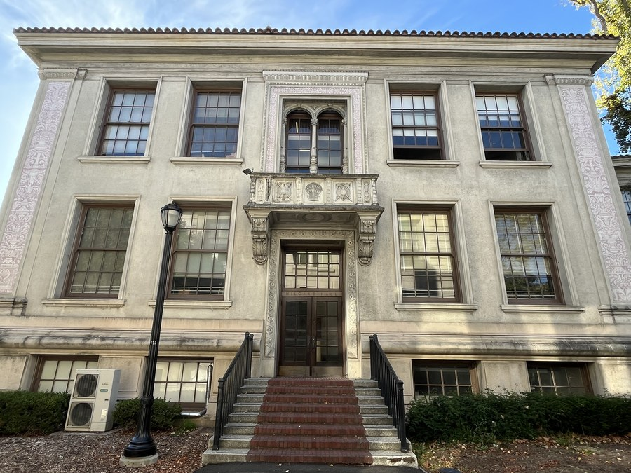
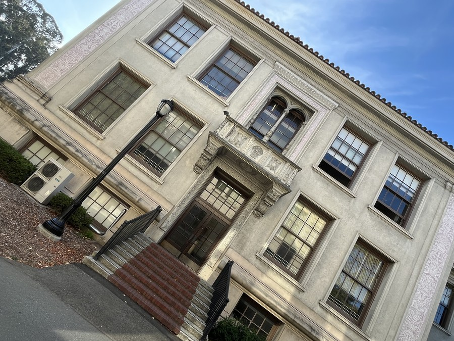
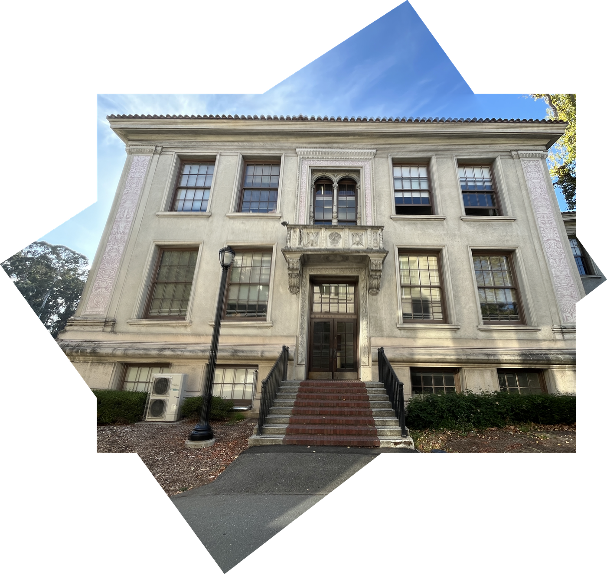
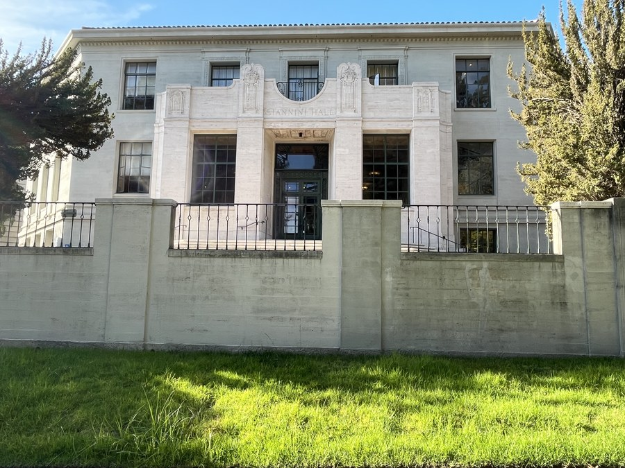
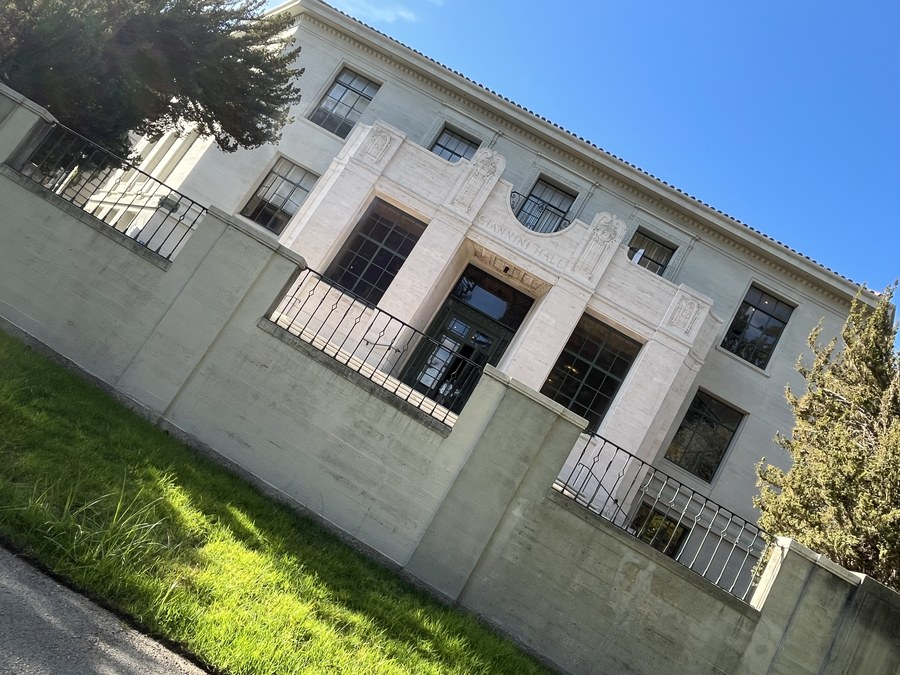
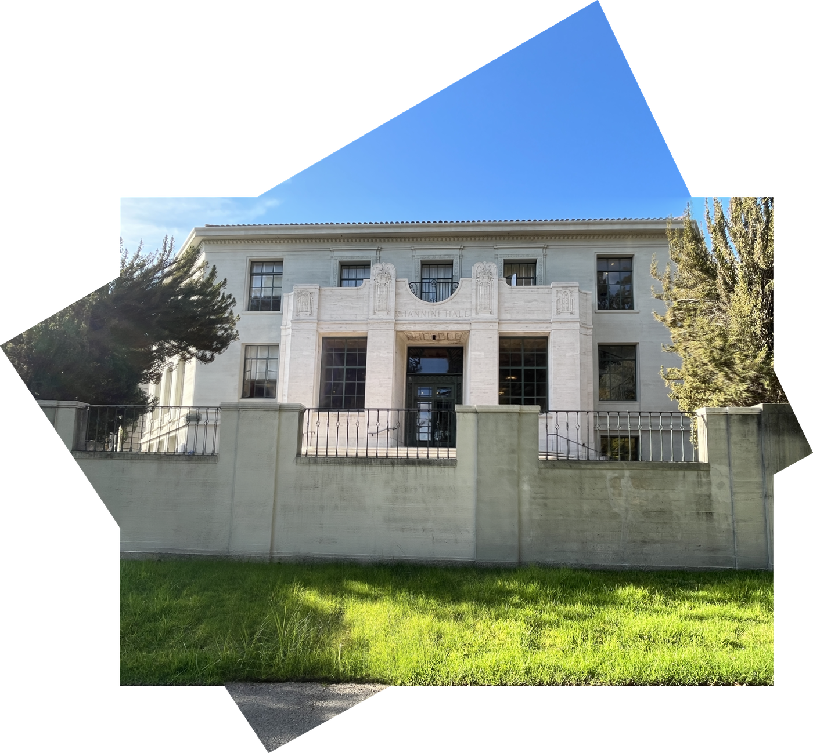
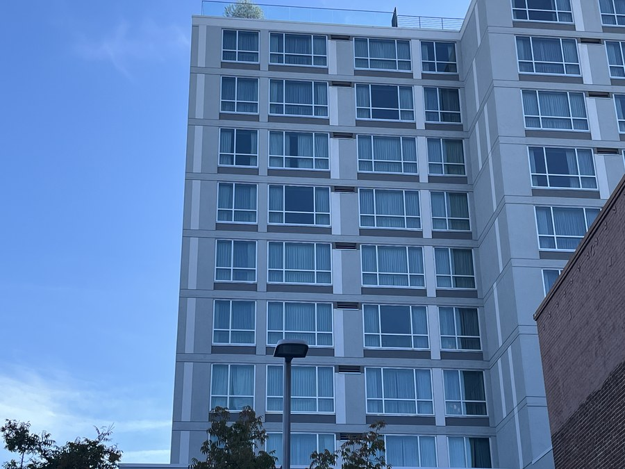
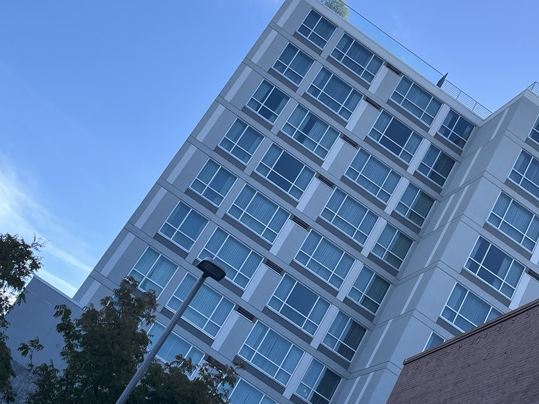
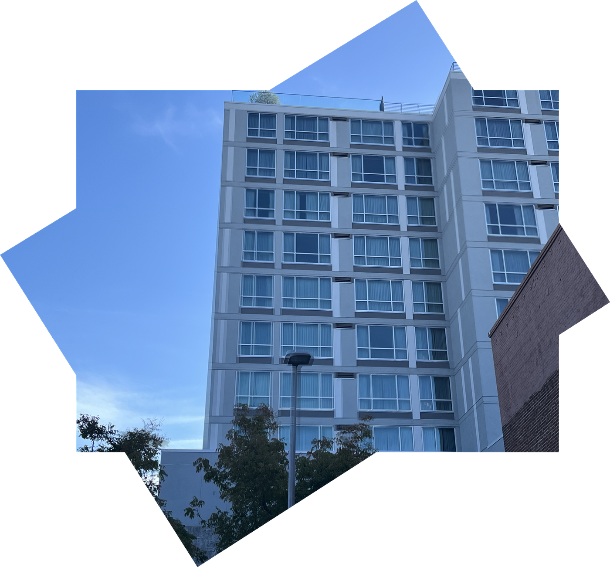